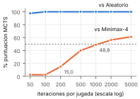
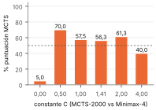
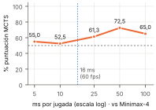

Todas las cifras salen de dotnet run -- referencia 40 42. Sólo se ha modificado MotorMcts.cs. Las tres pruebas de humo pasan: traza elige la columna 3 en los seis presupuestos (28,0 % de visitas con 25 simulaciones y 94,7 % con 10.000); duelo 40 2000 4 42 da 56,3 % (22-17-1), y MCTS-500 puntúa 100 % contra el aleatorio. E1, E2 y E3 coinciden fila a fila con la tabla de referencia del enunciado. Con 40 partidas, el error típico cerca del 50 % es de unos ±8 puntos, así que no interpretamos diferencias de menos de ~15.

Contra el aleatorio, MCTS gana desde el primer punto (97,5 % con 50 iteraciones y 100 % desde 100). Ese rival no distingue un algoritmo malo de uno bueno. La prueba real es Minimax-4 con heurística: con 50 y 100 iteraciones MCTS saca un 2,5 %, es decir, juega a ciegas. Con 200 llega al 15 % y con 500 al 40 %. Con 1.000 iteraciones alcanza el empate técnico (48,8 %, 19-20-1) y desde 2.000 gana más de lo que pierde (56,3 %). Por tanto, el umbral está entre 500 y 1.000 simulaciones, que en esta máquina son unos 2–4 ms por jugada.
La curva se aplana (56,3 → 61,3 % al pasar de 2.000 a 5.000, por debajo del ruido) por dos razones. La primera es estadística: el error de la media de cada hijo cae como 1/√n, así que duplicar el presupuesto sólo lo reduce un 30 %, y con 2.000 iteraciones la jugada buena ya se lleva la mayoría de las visitas. Las iteraciones extra confirman lo que ya se sabía. La segunda es de sesgo: los rollouts son uniformes, y un jugador aleatorio no sabe tapar una amenaza. Por eso, el valor al que converge cada nodo es el de «jugar al azar desde aquí», no el valor minimax. Más simulaciones afinan esa estimación sesgada, pero no corrigen el sesgo.
| Rival (MCTS-2000) | prof. 2 | prof. 4 | prof. 6 |
|---|---|---|---|
| Minimax con heurística | 58,8 % | 56,3 % | 23,8 % |
| Minimax ciego | 96,3 % | 92,5 % | 92,5 % |
No le sirve de nada. Contra el ciego, MCTS saca 92,5 % a profundidad 4 y 92,5 % a profundidad 6 (36-2-2 en ambos casos): mejora 0 puntos. Contra el rival con heurística, el mismo cambio de profundidad hunde a MCTS de 56,3 % a 23,8 %, lo que supone 32,5 puntos de mejora para el rival. El minimax ciego sólo distingue «gano / pierdo / nada» dentro de su horizonte. Casi todas sus hojas valen 0, así que con 6 capas ve más hojas igual de mudas y sigue eligiendo prácticamente al azar entre las jugadas que no pierden en seguida.
Buscar más hondo multiplica la calidad de la evaluación, no la sustituye: la profundidad amplifica una buena heurística y no aporta nada si no la hay. MCTS no necesita heurística porque la sustituye por los rollouts, y por eso le gana al ciego a cualquier profundidad.

Con C = 0 MCTS cae al 5,0 % (2-38-0). Es el fallo de la explotación pura (avaricia, convergencia prematura): cada hijo se prueba una vez porque los no visitados valen ∞, y a partir de ahí se baja siempre por el de mejor media. Una jugada que tuvo suerte en su primer rollout se queda todo el presupuesto, y las demás no se vuelven a mirar aunque sean mejores.
Con C = 4 baja al 40,0 %. Es el fallo contrario, la sobreexploración: el término de exploración domina a la media, las visitas se reparten casi por igual entre jugadas buenas y malas, y el árbol no profundiza. Se parece a un Monte Carlo plano que gasta simulaciones en jugadas que ya sabe malas.
Entre 0,5 y 2 todo queda entre 56 y 70 %. El 70 % de C = 0,5 es el mejor, pero su diferencia con √2 (56,3 %) no supera el ruido de 40 partidas. La curva tiene la forma esperada: se hunde en los dos extremos y es plana en medio.

| ms por jugada | 5 | 10 | 25 | 50 | 100 |
|---|---|---|---|---|---|
Iteraciones (calibrar 42) | 621 | 1.505 | 3.410 | 5.180 | 12.395 |
| % contra Minimax-4 | 55,0 | 52,5 | 61,3 | 72,5 | 65,0 |
La curva tiende a crecer (de 55,0 % con 5 ms a 72,5 % con 50 ms), como se espera de un algoritmo anytime, pero no es monótona: 10 ms (52,5 %) queda por debajo de 5 ms, y 100 ms (65,0 %) por debajo de 50 ms. Las dos caídas (2,5 y 7,5 puntos) están dentro del ruido de ±8 puntos de 40 partidas, así que no las interpretamos. Interpolando la calibración entre 10 ms (1.505) y 25 ms (3.410), en 16 ms caben ≈ 2.300 iteraciones en nuestra máquina, medidas en la posición inicial, que es la más cara. La calibración incluida en el propio CSV da algo parecido (1.339 y 3.506, ≈ 2.200). En E1, ese presupuesto corresponde a la fila de 2.000 iteraciones: 56,3 % contra Minimax-4 y 100 % contra el aleatorio. En E4 directamente, 16 ms queda entre el 52,5 % (10 ms) y el 61,3 % (25 ms).
Sí, lo pondríamos, con matices. En 16 ms MCTS ya gana a un alfa-beta de profundidad 4 con una heurística hecha a mano. Además, es anytime: si el frame se acorta, devuelve la mejor jugada que tenga. Pero en un juego real la IA no dispone del frame entero, porque el render y la lógica también lo usan. Lo razonable es repartir la búsqueda entre varios frames (el rival humano tarda segundos en mover) o lanzarla en un hilo aparte. Con 50 ms, que son 3 frames, sube al 72,5 %.
dotnet run compila en Debug, pero no lo hemos verificado. Puede explicar en parte que con 100 ms quedemos lejos del rango de referencia (93–99 %), pero no sabemos explicar toda esa diferencia.ElapsedMilliseconds (milisegundos enteros) con >. Usar Elapsed.TotalMilliseconds >= msMaximos sería más estricto, pero lo hemos dejado así para que el CSV entregado corresponda al código entregado.Como las cifras de E4 dependen del reloj, las tomamos como rangos y no como valores exactos.
Usaríamos MCTS cuando no hay una buena función de evaluación, el factor de ramificación es alto o hace falta una respuesta anytime con un presupuesto variable. E2 lo demuestra: sin heurística, el minimax no mejora con la profundidad y MCTS le gana con un 92,5 %. Usaríamos alfa-beta cuando existe una heurística fiable y el juego es táctico y de ramificación baja, con trampas cortas que los rollouts aleatorios no ven. Con heurística y profundidad 6, alfa-beta deja a MCTS-2000 en un 23,8 %. En resumen: el alfa-beta vale lo que vale su heurística, y MCTS vale lo que valen sus simulaciones.
referencia_s42.csv con graficas.py (Python + matplotlib).